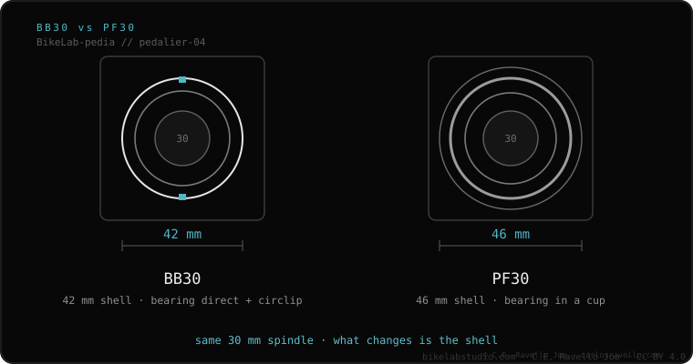

BB30 is a press-fit bottom bracket created by Cannondale. The frame shell is 42 mm and holds a 30 mm spindle; the bearings press directly against circlips, with no cups. It's stiff and light, but famous for creaking. Note: it is NOT the same as PF30, which is 46 mm and uses cups.
If your bike is carbon road from 2010–2016 and the bottom bracket shell is smooth, it's probably BB30. It's where the creaking-bottom-bracket reputation began.
BB30 was introduced by Cannondale and later opened as a standard. Instead of threading anything, the bearings are pressed directly into the frame, seating against retaining rings (circlips). Dropping the cups saves weight and allows a stiff 30 mm spindle.

Designed for 30 mm spindles. You can run 24 mm (Shimano) or SRAM DUB (28.99 mm) only with reducer adapters that drop into the bearing. It's not compatible with PF30: both use a 30 mm spindle, but the shell differs (42 vs 46 mm).
BB30 creaking or unsure a crank fits? Send us the case: Message us on WhatsApp
No. BB30 has a 42 mm shell with a direct bearing; PF30 has a 46 mm shell with cups. They are not interchangeable.
Because the bearing presses directly into the frame: if it loses grease, takes in dirt, or the fit isn't perfect, it moves and makes noise.
Yes, with specific reducer adapters that take the 30 mm bearing down to 28.99 (DUB) or 24 mm (Shimano).